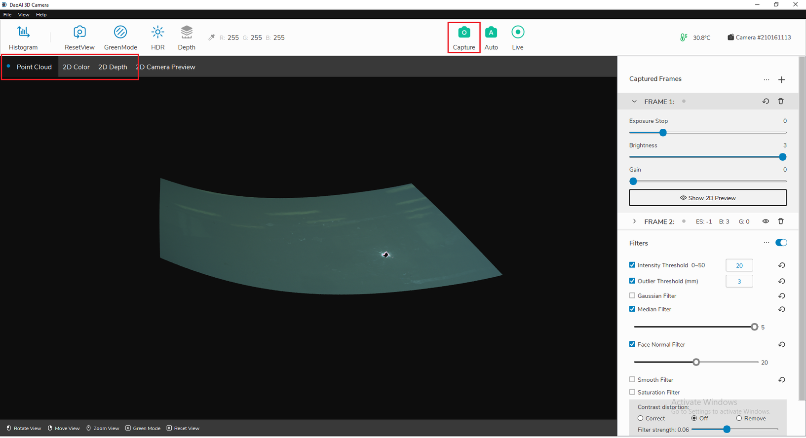
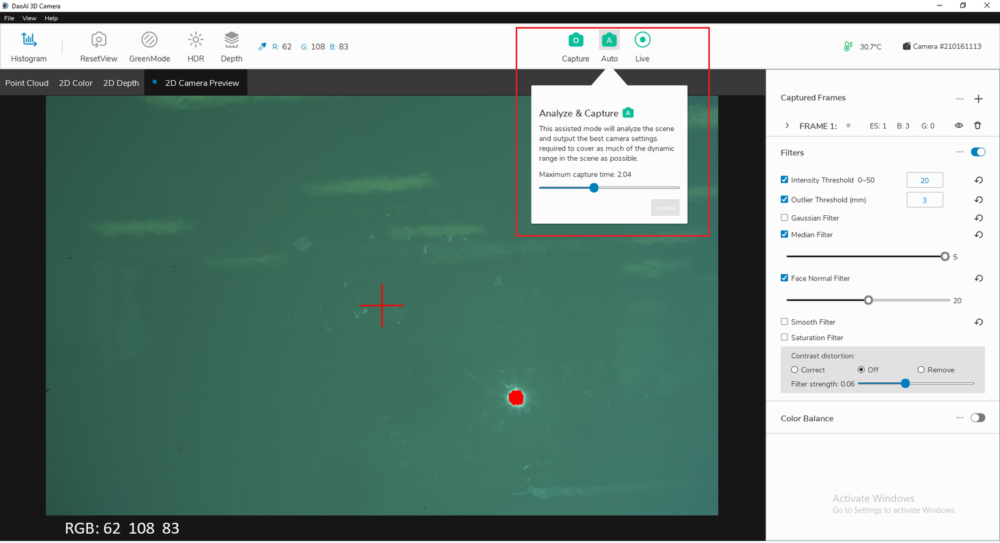
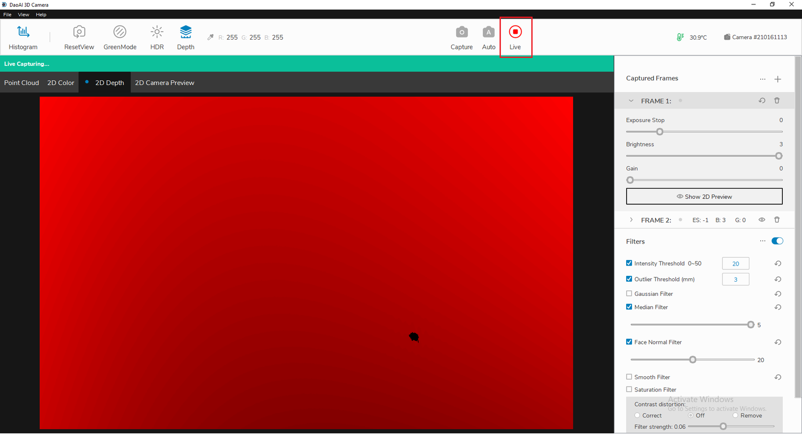

采集
执行采集是三位感知视觉软件的主要功能之一。三维感知视觉有3种拍摄模式可供选择。
采集
自动调整帧值参数并采集
连续采集
单张采集
当您点击顶部栏上的“Capture”时，相机将使用的所有帧及其相应的设置来采集图像。对于所有采集模式，您都可以查看深度图、颜色图和点云图之间切换。
自动采集
当你点击“自动”时，将对图像环境进行分析，并自动生成帧，来最大化最终的动态范围图片。然后，将使用新的帧设置进行单次采集。在此模式下，您还可以指定最大采集时间。此设置将更改帧数的最大的曝光时间
实时采集
点击 “实时”，三维感知视觉系统将连续进行单次拍摄。要停止执行采集，只需再次单击该按钮(当实时模式正在运行时)。
